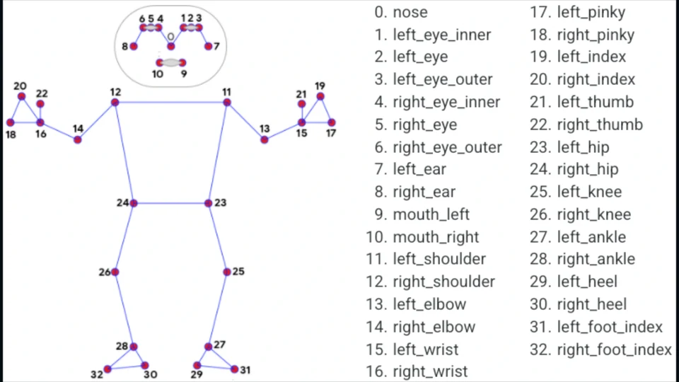
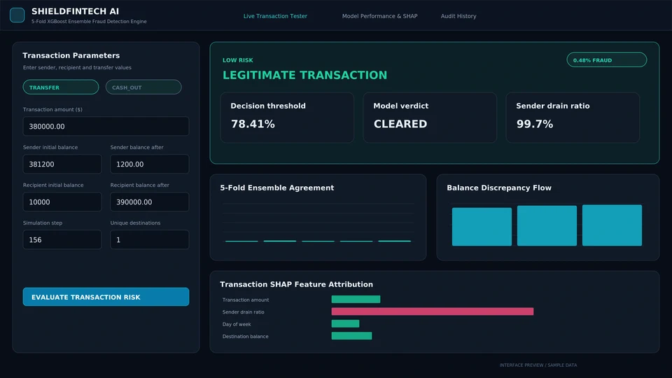
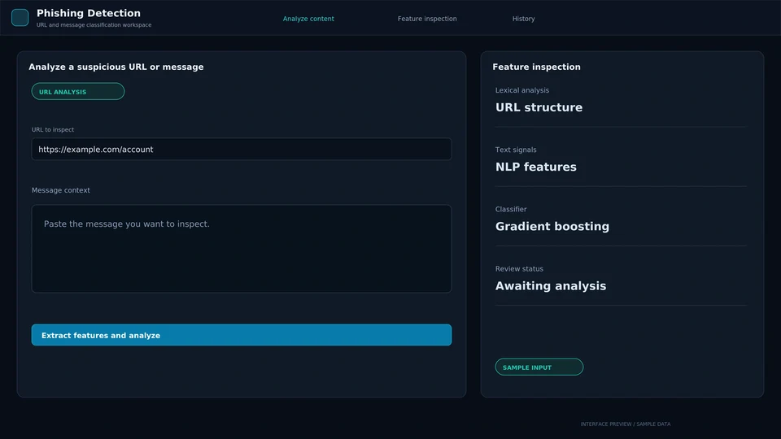
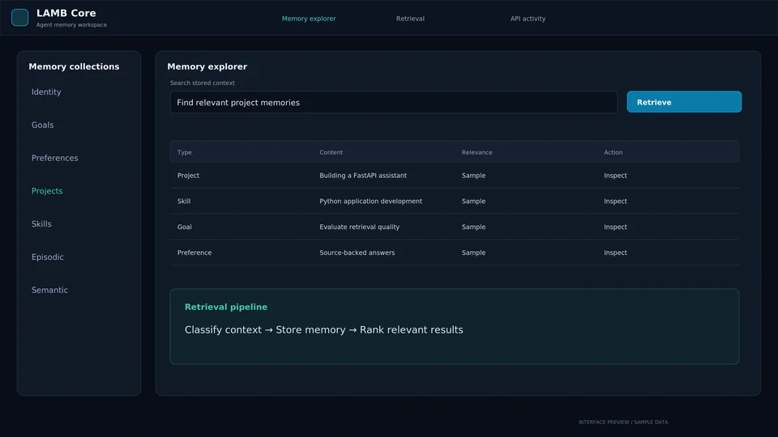
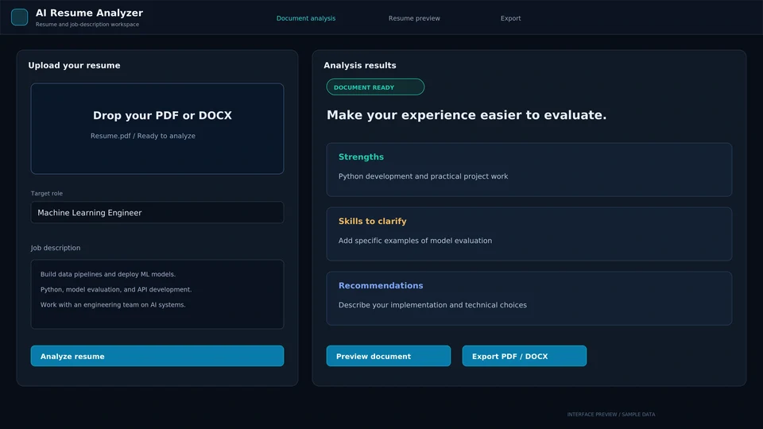
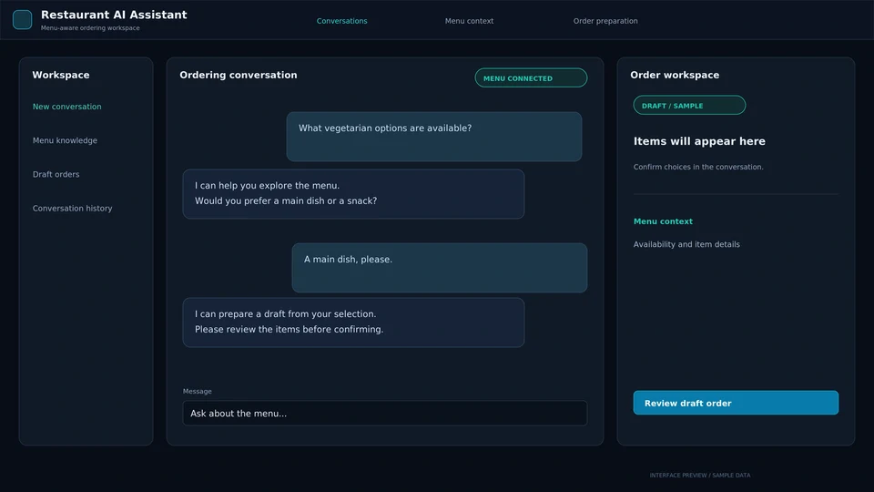

COMPUTER VISION
SKYWATCH
An urban monitoring prototype connecting visual detections, incident assessment, and emergency response coordination.
Explore project ↗SELECTED ENGINEERING / 10 PROJECTS
Computer vision, predictive models, and intelligent applications. Personal, academic, and open-source engineering projects by Shakeel Ur Rehman.
Showing 10 projects
COMPUTER VISION
An urban monitoring prototype connecting visual detections, incident assessment, and emergency response coordination.
Explore project ↗
COMPUTER VISION
A computer vision pipeline for detecting and tracking drones, with a dashboard for telemetry and recorded evidence.
Explore project ↗
COMPUTER VISION
Multi-person pose estimation with activity labels, visual overlays, and structured keypoint export.
Explore project ↗
Interface previewAPPLIED ML
A transaction-risk project combining an XGBoost ensemble, SHAP explanations, and a Flask decision dashboard.
Explore project ↗
APPLIED ML
An end-to-end telecom churn application, from preprocessing and model training to a FastAPI prediction interface.
Explore project ↗
Interface previewAPPLIED ML
A portfolio project exploring phishing classification with lexical features, NLP, and gradient-boosted models.
Explore project ↗
Interface previewAGENTIC AI
An experimental agent-memory architecture exploring classification, attention, retrieval, and memory lifecycle management.
Explore project ↗
Interface previewAI APPLICATIONS
A document-analysis application comparing resumes with job descriptions and generating structured improvement suggestions.
Explore project ↗
Interface previewAGENTIC AI
A portfolio project exploring conversational ordering, menu context, and tool-assisted restaurant workflows.
Explore project ↗ Interface preview
Interface previewVOICE AI
A conversational voice project connecting speech recognition, a ReAct agent, and speech synthesis over WebSockets.
Explore project ↗No matching projects. Try another name or category.
A GOOD PLACE TO START